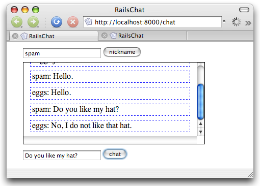
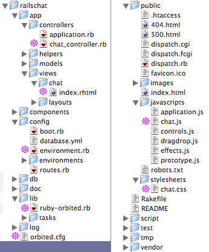

The goal of this tutorial is to introduce you to Orbited and the Ruby Orbited client API, ruby-orbited. The tangible goal is to produce a simple web-based chat application. There will be one main “chatroom” where every user who signs on is placed. We won’t deal with authentication or presence (detecting if someone timed out or left.) These are all possible with Orbited but are outside the scope of this tutorial. Below is a screenshot of the end goal.
This tutorial assumes you have already installed Orbited. If you haven’t then check out the tutorial on Installing Orbited.
Ruby on Rails is a web application framework that helps you build rich applications, using Ruby. Installing Ruby on Rails is rather laborious, and outside the scope of this tutorial.
ruby-orbited is a library of Ruby implementations of the Orbited client API. We will put the ruby-orbited.rb script inside our /lib folder of our Rails application, to include it in our app.
For more information about ruby-orbited see the tutorial Using Ruby with Orbited.
This tutorial will attempt to keep the Ruby source as simple as is possible for a Ruby on Rails application, so the chat functionality will be bare-bones.
To begin, we create a new Rails application, and then change directories into our new application directory, by running on the command line:
rails railschat
cd railschatWhich creates a massive directory structure, populated with dozens of files.
Next, we need to create the controller for our application, by running the controller-creator script:
./script/generate controller chat indexNext we want to add three more files to our railschat directory: /orbited.cfg, /public/stylesheets/chat.css, and /public/javascripts/chat.js. We can leave all three empty for now. Our railschat/ directory should now look something like the following (broken into two columns to save vertical space; pink splotches represent files we care about):
The /config/environment.rb file will contain our initialization code. Put the following at the bottom of the file, after all the standard boilerplate that is created by Rails:
require "ruby-orbited"
$orbit = SimpleOrbit::Client.new()
$users = []This imports the Orbited client library, and creates a new connection called $orbit, and also creates a users array called $users, both as global variables which will be accessible to our controller.
Next, we populate the /app/controllers/chat_controller file, which contains functions for the operations which will be called by our JavaScript, join and msg. user_keys is a simple helper function which returns a list of users, to which we will send events:
def user_keys
list = []
for user in $users do
list = list + [user[0] + ", " + user[1].to_s + ", /railschat",]
end
return list
end
class ChatController < ApplicationController
def index
end
def join
user = params[:user]
session = params[:session] || 0
ie_nocache = params[:ie_nocache]
if not $users.member?([user, session])
$users = $users + [[user, session]]
$orbit.event(user_keys(), '*' + user + ' joined*')
end
render :text => "ok."
end
def msg
session = params[:session] || 0
ie_nocache = params[:ie_nocache] || nil
$orbit.event(user_keys(), '' + params[:user] + ': ' + params[:msg])
render :text => "ok."
end
endAll of the so-called “actions” in the ChatController class will be exposed to HTTP GET requests from the JavaScript in our chat page.
The join action adds the user if he is not among those already logged in, and then sends an event to all users informing them of the newly-joined user. The msg action simply passes along the message to every connected user.
It is worthwhile to look at the user_keys helper function. The purpose of this function is to return a list of Orbited keys that correspond to the users that are currently logged in. Each key is composed of three parts, the user id, the session id, and the location of the request. In our application we aren’t using sessions so every user is given the session id of ‘0’. The user id is simply the username we got from the join command, and the location we are choosing arbitrarily to be /railschat. Any valid HTTP location would work though. You’ll see this location again in the JavaScript.
We should also take a quick look at /orbited.cfg. There is very little in this file as the default configuration is mostly fine.
[global]
proxy.enabled = 1
proxy.keepalive = 0
[proxy]
/railschat -> ORBITED
/ -> http://127.0.0.1:3000To avoid cross-domain scripting problems we will use the Orbited proxy to redirect all requests to our chat application. To JavaScript the Orbited daemon and the RailsChat server will seem to be one and the same. In this simple tutorial, we are running a single Rails instance in a single thread on one computer, to avoid threading and multiple-machine complexities that are out of the scope of this tutorial. Having a single thread introduces an issue with keepalive, however; as such we will disable it in our proxy.
The HTML for our chat example is very simple. It consists of two form text fields with their associated buttons, and a div called #box, into which the content of the chat will go.
To begin the file (chat.html), we need a doctype declaration, and a header, which links to a CSS stylesheet and the client-side JavaScript:
<!DOCTYPE html>
<html>
<head>
<title>RailsChat</title>
<link rel="stylesheet" href="/stylesheets/chat.css">
<script src="/_/orbited.js"></script>
<script src="/javascripts/chat.js"></script>
</head>Next, we include a text field and button for the nickname:
<body>
<input type="text" id="nickname">
<input type="button" value="nickname" onclick="connect();">Finally, we add a div which can accept the actual chat content, followed by another text field and button for adding to the chat, and the closing tags for the body and html elements:
<div id="box"></div>
<input type="text" id="chat">
<input type="submit" value="chat" onclick="send_msg();">
</body>
</html>The CSS stylesheet (/public/stylesheets/chat.css) for our chat page can style it however we like. In this case, we keep things very simple, setting a few margins, and adding dashed blue borders around each displayed chat event:
body {
margin-left:2em;
}
#box {
border: 1px solid black;
width: 80%;
margin: .5em auto .5em 0;
height: 10em;
overflow: scroll;
}
.event {
border: 1px dashed blue;
margin: .5em auto;
padding: .2em;
width: 90%;
}The JavaScript (/public/javascripts/chat.js) is the meat of our client-side code. We are going to start with a little bit of boilerplate. We need a function that will create an XMLHttpRequest object no matter what browser we’re using. We also need to define the variable ie_nocache. It will be used later in the tutorial. Its purpose is to keep Internet Explorer 6 from caching requests.
var ie_nocache = 0;
var event_iframe = document.getElementById('events');
function create_xhr() {
try { return new ActiveXObject("Msxml2.XMLHTTP"); } catch (e) {}
try { return new ActiveXObject("Microsoft.XMLHTTP"); } catch (e) {}
try { return new XMLHttpRequest(); } catch(e) {}
return null;
}The first bit of real code we need will handle connection. After someone types in their nickname we need to do two things. 1) Initialized the Orbited event stream. In this case we will use the iframe transport, so this entails connecting the hidden iframe to the Orbited server at the RailsChat location. 2) We need to let the chat server know that we are now connected so we receive any future messages. We do this by making a GET request to the server and we include our nickname.
We’ll break this up into two functions. The connect function will take care of the iframe and the join function will send the request to the chat server. We’ll have the connect function call the join function instead of the other way around because we want to first connect the iframe before we alert the server so we don’t miss any messages.
function connect() {
name = document.getElementById('nickname').value;
event_iframe.src='/railschat?user=' + name + '&session=0&transport=iframe';
join(name);
}
function join(user) {
xhr = create_xhr();
xhr.open("GET", "/join?user=" + user, true)
xhr.send(null);
}Next, we want to be able to see any events that are sent. If you recall the server code, we’ll be receiving events in the form of simple JavaScript strings. We just want to stick each string in its own div and put that div in our main chat_box div. The CSS will take care of the formatting.
It is important to note at this point that the iframe transport depends on the parent window having a function named event. Whenever an event is sent, it is sent in the form <script> window.parent.event(event_data);</script>. This means that its our job to actually define the event function. We’ll use this function to perform the aforementioned DOM manipulation. That is, we’ll have event actually put the text into the appropriate divs.
event_iframe.e = function(data) {
chat_box = document.getElementById('box');
div = window.parent.document.createElement('div');
div.className = "event";
div.innerHTML = data;
chat_box.appendChild(div);
chat_box.scrollTop = chat_box.scrollHeight;
}The final step is to provide a way to send messages. Sending a message is a matter of contacting the chat server to call the msg function. We need to provide the message text as well as the nickname of the sender. Also, remember how we defined the variable ie_nocache? We want to increment ie_nocache every time we send a message so that every call to the msg function looks different, event if we send the same message twice. If we don’t do this, then some browsers such as Internet Explorer 6 will not send the message a second time because it will have cached the result of the first request. We don’t actually care about the responses to these requests though; we are only interested their effect: dispatching an orbit event. So having the cached result in the browser is useless to us, if the server never gets the message. Here is the code we need to send a message.
function send_msg() {
ie_nocache = ie_nocache + 1;
xhr = create_xhr();
msg = document.getElementById('chat').value;
nickname = document.getElementById('nickname').value;
xhr.open("GET", "/msg?ie_nocache=" + ie_nocache + "&user=" + nickname + "&msg=" + msg, true);
xhr.send(null);
}And with that we are finished with the JavaScript side of our chat application. Everything else should be in place at this point, so you can open two terminals to the root railschat directory, in one starting Orbited:
orbitedAnd in the other starting Rails:
./script/serverThen point your browser at http://localhost:8000/chat, and then open a second browser window and point it at http://127.0.0.1:8000/chat, and test the application. It’s important to use the two different hostnames localhost and 127.0.0.1 because some browsers limit the number of open connections you can have to each hostname to two. With this limit it is impossible to run two instances of the chat application on the same host. Of course, 127.0.0.1 and localhost should refer to the same local machine, so its a good way of tricking the browser into thinking its talking to separate servers.
We now have a basic implementation of a chat application. The next obvious steps are authentication and timeout. For a more advanced example of a chat application checkout the webirc SVN Repository. Webirc is an web-based IRC client written in Python with Twisted and Orbit. It deals with presence by sending regular pings to the browser.
Another issue that we glossed over is that of cross-domain scripting. If you recall our orbited.cfg file for this tutorial, we enabled the Orbited proxy to dispatch requests to the chat server. The effect of this is that the browser only knows about the Orbited server and thinks that all of its communication with the chat server is actually coming from the Orbited server. This is important because browsers do not allow cross-domain scripting. This means that if we received events inside of an iframe that was served from localhost:8000, then we can’t make calls from the iframe to a parent window server from localhost:3000 because it counts these as different domains. The proxy is an easy way to ignore the whole issue.
Of course, on a production site it doesn’t make sense to use the Orbited proxy for a variety of reasons. There will likely be a mismatch between the number of Orbited nodes you have and the number of web nodes you have, so there is no sensible proxy mapping. More importantly though, the proxy adds latency to each request and uses additional processor. The proxy should therefore be treated as a development and testing tool only. Orbited comes with built-in solutions for handling cross-domain scripting. One of those solutions is the iframe_domain transport. It is nearly identical to the iframe transport except that it dispatches an initial <script>document.domain="hostname"</script> to the browser right after its connected. “hostname” will be replaced with the top level hostname from the Host header of the request, with the port also stripped. So if the Host header is some.sub.domain.com:8000, then the initial script sent will be <script>document.domain="domain.com"</script>.
This problem is addressed in the JavaScript source of the webirc client as well, and you should take a look before you try to deploy your Orbit applications in a production environment.